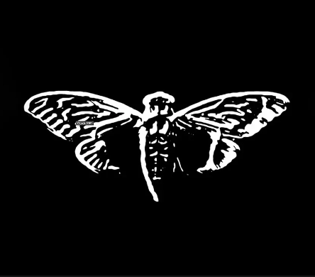
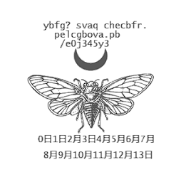

Cicada 3301
Cicada 3301 — таємнича організація, яка публікує головоломки в Інтернеті. Перша серія головоломок з'явилася в Інтернеті 5 січня 2012 року і тривала близько місяця. Друга серія почалася 5 січня 2013 року. Третя серія — 6 січня 2014 року після публікації головоломки в Twitter. Нова головоломка була опублікована в Twitter 6 січня 2016 року. У 2015 і 2017 роках нових головоломок не було. Головоломки пов'язані з захистом даних.
4 січня 2012 року на сайті 4chan був розміщений пост: «Привіт. Ми шукаємо осіб з високим інтелектом. Для цього ми розробили тест. У цьому зображенні є приховане повідомлення. Знайдіть його, і він покаже вам, як нас знайти. З нетерпінням чекаємо на тих, кому вдасться пройти весь шлях. Хай щастить. 3301».
Мета
Заявленою метою головоломок був набір осіб з високим інтелектом, але кінцева мета залишається невідомою. Деякі припускають, що «Цикада 3301» — це таємне співтовариство, спрямоване на поліпшення криптографії, конфіденційності та анонімності. Інші вважають, що «Цикада 3301» — це культ або релігія.
Історія
Починаючи з 4 січня 2012 року, коли відвідувачі всіх відомостей 4chan виявили пост з картинкою, яка представляла з себе білий друкований текст на чорному фоні. Текст голосив: «Привіт. Ми шукаємо осіб з високим інтеллектом. Для цього ми розробили тест. У цьому зображенні є сховане повідомлення. Знайдете його, і воно покаже вам, як знайти нас. З нетерпінням чекаємо тих небагатьох, котрі змогли пройти весь шлях. Удачі 3301». Відвідувачі цього анонімного іміджборду, на якому зазвичай викладали хуліганські та напівпорнографічні картини, почали активно обговорювати незвичне зображення, і багато хто прийшов до висновку, що, можливо, так АНБ шукає потенційних співробітників. Дійсно, спосіб не новий: спецслужби відслідковують хакерські заходи та форуми з метою залучити до державної служби талановиту молодь. Під час Другої світової війни британські спецслужби шукали перспективних співробітників за допомогою кросвордів у газеті Daily Telegraph. Так чи інакше, картинка привернула увагу, її перепостили в інших форумах — і ентузіасти взялися за розшифровку.
Хтось з коментаторів запропонував відкрити зображення в простому текстовому редакторі WordPad, і в отриманому тексті знайшлось єдине повідомлення: «TIBERIVS CLAVDIVS CAESAR говорить: „lxxt> 33m2mqkyv2gsq3q = w] O2ntk“», тобто «Тиберій Клавдій Цезар говорить „lxxt> 33m2mqkyv2gsq3q = w] O2ntk“». Завдяки очевидній підказці розшифрувати код виявилось просто: це був так званий код Цезаря, або шифр переміщення, в якому кожний окремий символ в тексті замінюється символом, що знаходиться в алфавіті на деякий постійний ряд позицій наліво або вправо. Для знаючих, що Тиберій Клавдій був четвертим римським імператором, було логічним припустити, що працює зміщення тексту на чотири літери назад, — результат якого став адресою сайту в інтернеті. Відвідувача цього сайту чекало зображення качки з написом: «WOOPS Just decoys this way. Looks like you can't guess how to get the message out.». Ключ до загадки приховувався в англійському тексті: слова «guess» і «out» приводили до назви стеганографічної програми OutGuess, що дозволяє виявляти дані, які приховані в звичайних цифрових зображеннях. Пропустивши картинку через OutGuess, можна було отримати ряд цифр з позначкою «Це книжковий код» та посилання на одну з «дошок» популярного сайту Reddit, де відвідувач зустрічав код, який складався з цифр, використовуваних в античності індійцями майя, безліч періодично доданих зашифрованих рядків і дві картинки з підписами «Вітаємо» і «Проблеми?». В кожній картинці було закодовано повідомлення, яке також можна було прочитати за допомогою OutGuess. В першому говорилося, що з цього моменту кожне посилання матиме PGP-підпис, і приводився цей підпис, а друге повідомляло: «Ключ був завжди перед вашими очима. Це не пошуки Святого Грааля. Перестаньте все ускладнювати. Удачі 3301».
Цифри майя були ключем до розшифрування рядків: тут знову використовувався код Цезаря, і в результаті перед очима з'явився фрагмент з поеми про короля Артура, що входить до складу середньовічного валлійського збірника повістей «Мабіногіон». Застосувавши до розшифрованого рядка «книжковий код», наданий раніше (перший номер — номер рядка, другий — порядковий номер букв), можна було отримати такий текст: «Зателефонуйте нам за номером телефону, за номером два, один, чотири, три, дев'ять, нуль, дев'ять, шість, нуль, вісім». Слухавку підіймав автовідповідач з таким повідомленням: «Дуже добре. Ви впорались. Три простих числа пов'язані з оригінальним зображенням final.jpg. 3301 одна з них. Ви повинні знайти інших двох. Щоб перейти на наступний рівень, перемножте ці числа між собою і додайте .com. Удачі. До побачення».
Розмір початкового зображення складав 509 × 503 пікселя, і ці обидва числа прості. Перемноживши їх з 3301, можна було отримати адресу 845145127.com, де відвідувач зустрічав зображення цикад та лічильник зі зворотним відліком. Наступне повідомлення, сховане в картинці, повідомляло: «Ви добре постарались, щоб зайти так далеко. Терпіння — це чеснота. Верніться сюди о 17:00 в п'ятницю, 9 січня 2012 року по всесвітньому часу». Після того, як відрахунок закінчився, сайт оновився, і в зображенні цикади було заховано вже інше повідомлення, що містить 14 GPS-координат різних точках на земній кулі, включаючи Варшаву, Париж, Сіетл, Сеул, Аризона, Каліфорнія, Новий Орлеан, Маямі, Гаваї та Сідней. Масштаби заходу вразили навіть самих недовірливих учасників! І, мало того, швидко з'явилися ентузіасти, які перевірили всі 14 точок. По всіх вказаних адресах розташовані вуличні ліхтарі, до яких було додано плакат із зображенням цикади та QR-коду. Різні варіації повідомлень запропонували розшифрувати черговий «книжковий код», цього разу в книзі «Агриппа» Уїльяма Гібсона, який в підсумку привів до адреси sq6wmgv2zcsrix6t.onion в мережі TOR. Переважна більшість тих, хто перейшов за цією адресою отримували повідомлення «Нам потрібні кращі, а не наслідувачі», а кілька тижнів по тому на 4chan і Reddit з'явилося наступне: «Привіт. Ми знайшли тих, кого шукали. Так наша подорож довжиною в місяць закінчується. Бувай».
З чим зіткнулися ті, кого шукали організатори цієї «подорожі», достовірно невідомо. Деяким зайшовшим за адресою сайту в мережі TOR запропонували зареєструвати анонімну поштову скриньку Hotmail, на яку було надіслано чергове завдання. Втім, оскільки бажаючих поділитися своїми успіхами в Мережі не знайшлося, що було далі, так і залишається таємницею.
2013
Але історія на цьому не закінчується. Рівно через рік, 4 січня 2013 року, на 4chan з'явилося нове повідомлення в знайомому стилі — білий шрифт на чорному тлі. У ньому говорилося: «І знову привіт. Ми продовжуємо шукати інтелектуалів. Перший ключ захований в цьому зображенні. Знайдіть його, і він покаже вам, як знайти нас. З нетерпінням чекаємо тих небагатьох, яким вдасться пройти весь шлях. Хай щастить. 3301».
Пропустишви картинку через вже добре знайому програму OutGuess, зацікавлені отримували черговий «книжковий шифр», який вказував на «Книгу закону», написану на початку XX століття відомим британським окультистом Алістером Кроулі, і після розшифровки приводив до 130-мегабайтного архіву на Dropbox. В архіві зберігався образ завантажувального диска Linux, який після завантаження виводив на екран послідовність простих чисел.
Далі було ще кілька завдань, в гру вступали mp3-файли, аккаунт на «Твіттері», англо-саксонські руни, гематрія, нові GPS-координати по всьому світу від Москви до Окінави і знову onion-адреси в мережі TOR. Успішно пройшовши «загальнодоступні» тести було знову запропоновано створити абсолютно нові анонімну поштову скриньку і PGP-ключ, і завантажити ці дані на сервер організаторів. На цю адресу переможці повинні були отримати персональні завдання. А всім іншим відповіддю була тиша.
2014
Але це не кінець історії, оскільки 4 січня 2014 року була опублікована чергова картинка, правда цього разу не на 4chan, а на imgur. За вихідні було опубліковано близько дюжини зображень на загальнодоступній сторінці сайту 4chan.org, багато хто стверджував що це і є новий ключ головоломки, але їх незабаром викрили.
Як і в попередні роки, ключ містився в тексті, написаному білими буквами на чорному тлі. Цього разу текст містив наступне послання: «Hello. Epiphany is upon you. Your pilgrimage has begun. Enlightenment awaits. Good luck. 3301.», що можна перекласти як «Привіт. Побачте Богоявлення. Ваше паломництво розпочалося. Просвітництво чекає. Хай щастить. 3301.»
Погодьтеся, читається як який-небудь кіберпанківський «Код да Вінчі» і дуже нагадує витончену гру в альтернативній реальності (ARG). Головний принцип такої гри — максимальна реалістичність: всі згадані об'єкти, включаючи тексти, книги, адреси та телефони, повинні існувати насправді, а поведінкою учасників керують невідомо які керівники, що спілкуються з гравцями виключно кодовими повідомленнями. Однак дотепер незрозуміло, хто і з якою метою придумав Cicada 3301: ніхто не намагався якимось чином заробити на цьому або прорекламувати якісь фільми або товари.
Якщо ж це не гра, то що? Набір абітурієнтів в хакерські університети? Використання onion-адрес в анонімній мережі TOR натякає на так званий глибокий інтернет, в якому мешкають, втім, не тільки мережеві анархісти і злочинці, а й цілком респектабельні бази даних наукових установ і бібліотек. Влада Чилійської провінції Лос-Андес поспішили оголосити Cicada 3301 хакерською групою, замішаної в нелегальній діяльності, чому немає ніяких об'єктивних підтверджень і що «цикади» спростували в своєму черговому повідомленні.
Цілком правомірне припущення, що Cicada 3301 — це проект спецслужб по залученню до співпраці талановитої молоді. На користь цієї версії говорять масштаби гри, зазначив майже на всіх континентах, — хоча, з іншого боку, справжнім ентузіастам під силу і не такі штучки.
Поки так і не вдалося достовірно встановити, що ж таке Cicada 3301. При цьому у «гри» є стійкі прихильники, які ведуть детальну 76-сторінкову онлайнову енциклопедію, з якої можна докладно дізнатися про все пов'язане з Cicada 3301, включаючи всілякі чутки і припущення. Вони ж регулярно спілкуються і на окремому IRC-каналі Freenode, так що всі зацікавлені цією загадкою можуть сміливо до них приєднуватися.
Хто насправді ховається за проектом Cicada 3301
В цілому за три роки в головоломках Cicada 3301 використовувалося більше 20 відсилань до літературних і художніх творів, картин і музики. Загадки вимагали володіння основами криптографії, програмування, стеганографії (наука про приховану передачу інформації шляхом збереження в таємниці самого факту передачі) і декількох математичних теорій. Крім того, в посланнях Cicada 3301 можна було виявити натяки на безліч філософських концепцій — від навчань Карла Юнга і Фрідріха Ніцше до дзен-буддизму і кабали.
Все перераховане не давало практично жодного уявлення про те, що робить і чого домагається організація. Таємничість групи породила безліч конспірологічних теорій.
Хтось вказував на те, що значна частина телефонних номерів, що використовувалися в загадках, починається з коду американського міста Даллас, де колись вбили президента Кеннеді. Це частково служило доказом на користь теорії про зв'язок з конкурсами ЦРУ, ФБР або інших спецслужб (за однією з гіпотез за вбивством Кеннеді могли стояти американські розвідувальні відомства). Також висувалися версії, згідно з якими до створення загадок можуть бути причетні британські спецслужби.
Другою популярною гіпотезою стала версія про таємничих хакерів, які намагаються за допомогою конкурсів з загадками завербувати собі нових здібних і талановитих членів.
За три роки жодна з теорій так і не отримала офіційного підтвердження.
 